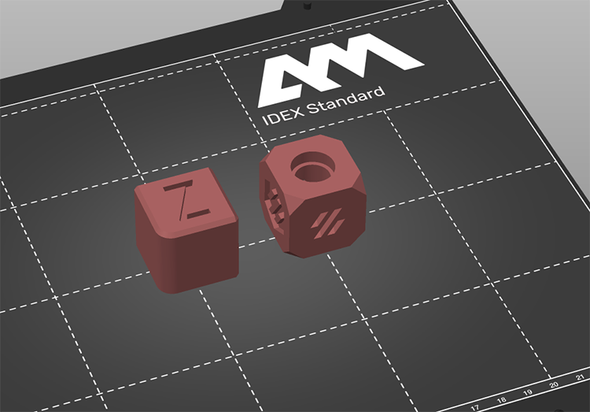

Kalibrierungswürfel |
||||
|
Auf dieser Seite können Sie den beliebten Kalibrierungswürfel ausdrucken. Er ist nützlich, um zu sehen, ob der Drucker genau ist und um einige Einstellungen zu kalibrieren. Als Erstes müssen Sie ein Ziel auswählen.
|  |
Sie sollten zwei Würfel mit unterschiedlichen Größen drucken. Wenn die Maßgenauigkeit mit der Größe der Würfel wächst, müssen die Schritte/mm Ihrer Steppermotoren angepasst werden (Achtung: Wenn das der Fall ist, sollten Sie auch den Durchfluss anpassen und vielleicht einige Kalibrierungen wiederholen, wenn die Veränderung groß ist). Wenn er nicht skaliert, können Sie ihn korrigieren, indem Sie die xy-Kompensation anpassen (Reiter Slicing). Mit dem Voron-Würfel können Sie auch die Kalibrierung der Löcher testen, da diese oft zu klein sind. Das Loch an der Oberseite sollte gerade so groß sein (bei der 30-mm-Version), dass ein Lager aufgeschoben werden kann.
Dieser Test soll zeigen, ob das Muster der Füllung an den Rändern zu sehen ist. Versuchen Sie, die Füllung so weit wie möglich zu reduzieren, aber überprüfe die obere Füllung, da sie Artefakte erzeugen kann, wenn sie zu niedrig ist. Mit dem Standardwürfel ist es besser, da Sie eine größere obere Fläche haben.
Die Standardgröße des Standardwürfels ist 20mm und die Standardgröße des Voron-Würfels ist 30mm.
Lizenz für den Voron-Kalibrierungswürfel: GPL V3, hergestellt von VORONDesign